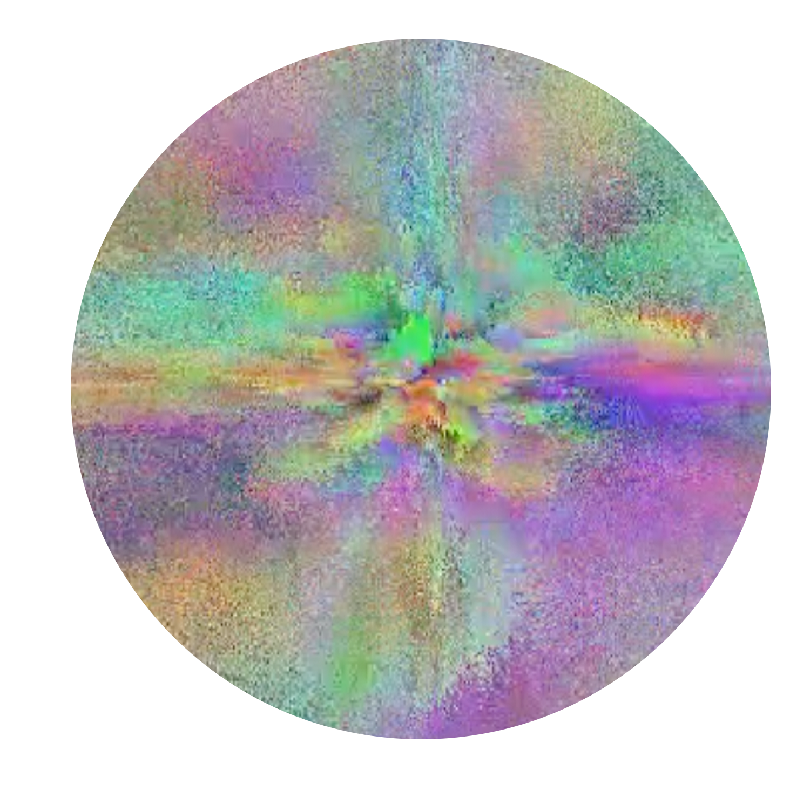

∘◦◦Bio◦◌∘◦∘
Gold Davin Kim is an artist based between Geneva and London, working across sound, writing, film, and performance. Their practice centres on hearing and writing as tools for exploring invisible connections between human existence, place, and systems. Through sound collection and its translation into language, image, and form, Gold investigates intersections of sensation, memory, and emotion, revealing relationships between inner perception and external reality. With a background in contemporary music and fine arts, they work with live coding and creative programming to produce real-time sound and visual compositions, using technology as a poetic and experimental tool to question authorship, temporality, and human connection.
